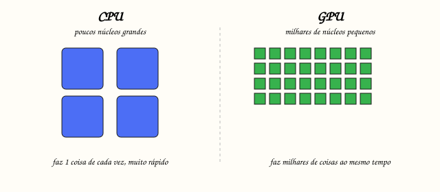

← Mapa do curso · Marco 1 · Módulo 1 de 6
Como um joguinho desenha 2 milhões de pixels, 60 vezes por segundo, sem engasgar? A resposta é um tipo de programa minúsculo e esquisito chamado shader — e um chip cheio de músculos chamado GPU. No fim deste módulo você vai escrever (sim, você) seu primeiro pedacinho de shader e mudar a cor da tela.
Um shader é um programinha que NÃO roda no cérebro principal do computador (a CPU). Ele roda lá na placa de vídeo. E o trabalho dele é responder uma pergunta boba, milhões de vezes: "que cor tem ESTE pixel?"
A CPU é genial, mas faz as coisas mais ou menos uma de cada vez. Pintar 2 milhões de pixels um por um, 60×/seg, ia derreter. A GPU resolve com força bruta: em vez de poucos núcleos grandes, ela tem milhares de núcleos pequenos pintando ao mesmo tempo.

Pensa numa linha de montagem de fábrica: entram números (a posição de cada pontinho do modelo 3D) e sai uma imagem pronta. Cada estação faz seu pedaço. A gente vai conhecer essa linha inteira ao longo do curso — por agora, foca na última estação: pintar o pixel.
O playground abaixo já tem um shader rodando. Ele faz uma coisa só: pinta a tela inteira com a cor que você escolher. Mexe no seletor de cor e veja a tela mudar na hora.
Sem rodar ainda — preveja: se a cor for vermelho puro, quanto vale cada canal? Escreva nos três espacinhos (cada um vai de 0 a 1):
R = ____ G = ____ B = ____
Agora confira movendo o seletor pra vermelho. Acertou?
1.0 no fim (vec4(cor, 1.0)) é o alpha = opaco. Falaremos disso lá no módulo de transparência.255.0, a GPU entende "muito além do branco" e satura. Pense em porcentagem: 1.0 = 100%.
Desafio: faça a metade esquerda da tela vermelha e a direita
azul. Dica: v_uv.x vai de 0 (esquerda) a 1 (direita). A função step(0.5, x)
devolve 0 antes de 0.5 e 1 depois. Edite, dê Test Drive e clique Conferir.
Ligue cada termo ao seu significado (escreva a letra):
Próximo: O Pixel e a Cor → (em construção no próximo plano)